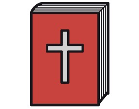
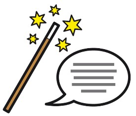
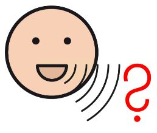

Willkommen am Studjo | Terminal
+++ Neue Übersicht in Fußzeile erklärt Inhalte und Bedienung +++ Motto der Woche mit Erklärung +++ Siehe täglich die Tages-Losung +++
Neuigkeiten bei Studjo

Termine

Speiseplan

Arbeitsbegleitende Angebote
Werkstattordnung und Regeln

Gewaltschutz

Arbeitssicherheit

Werkstattrat und Frauenbeauftragte

Info-Filme

Allgemeine Nachrichten

Wetter

Adressen und Fahrpläne

Losung für heute

Wochenmotto
